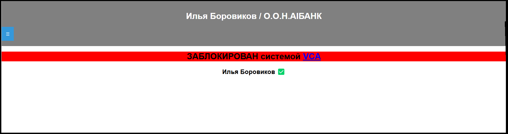

1. Знакомство с ситемой VCA(Vacuuming-Cheater-Accounts)
1.1 Меня забанила система VCA
1.2 По каким причинам система VCA даёт блокировки
1.3 Возможно-ли снять блокировку VCA
______________________________________________________________
VCA или по другому 'Vacuuming-Cheater-Accounts' это система банов данного форума.
А также верный друг и помошник форума!
Некоторые пользователи форума могут увидеть такую надпись: (см. рисунок ниже)
Если вы видите эту надпись на своём аккаунте значит вы были забанены системой VCA.
Система VCA даёт баны по следующим причинам:
Злоупотребление форумом (см. подпункт)
Использование стороних программ мешающим работе форума
Спамингом на почту форума или спаминг формами на форуме
НЕТ! Блокировка VCA накладывается ПОЖИЗНЕННО!
Блокировку VCA снимается автоматически через 5-10 лет только если причина была не сильно нарушающей правила форума.